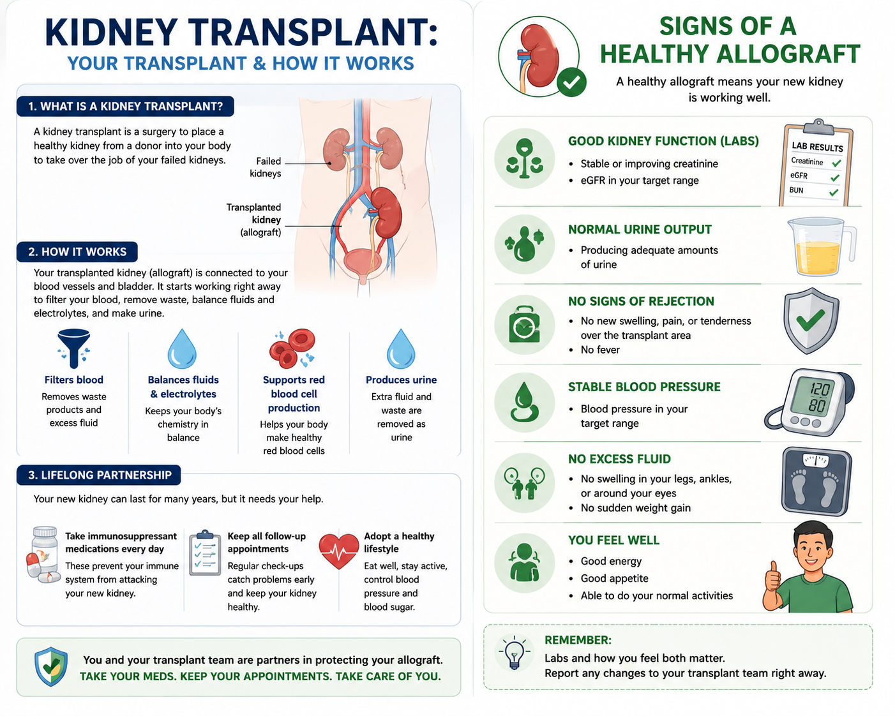
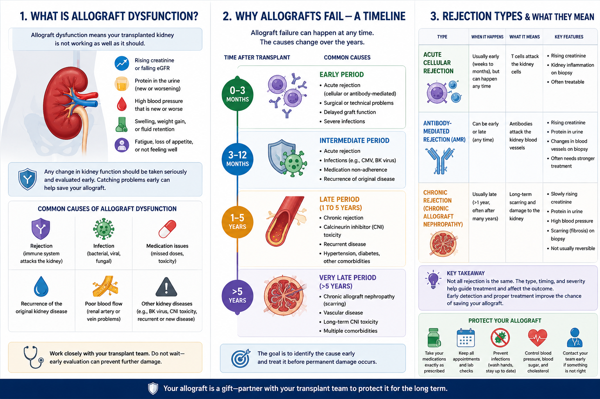
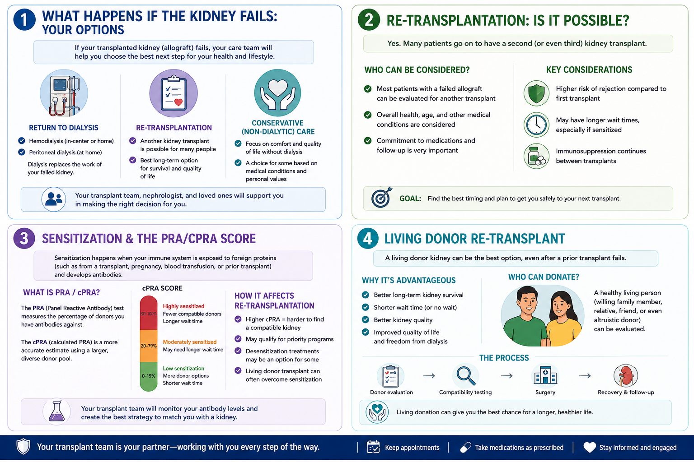
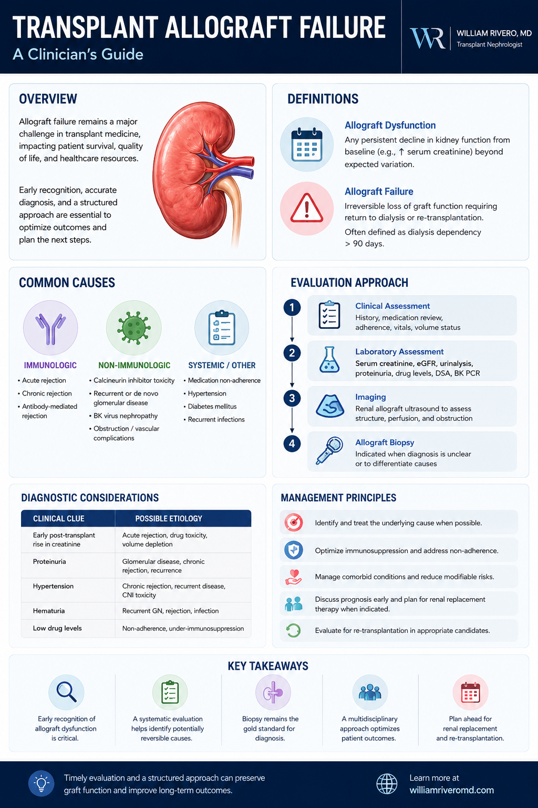
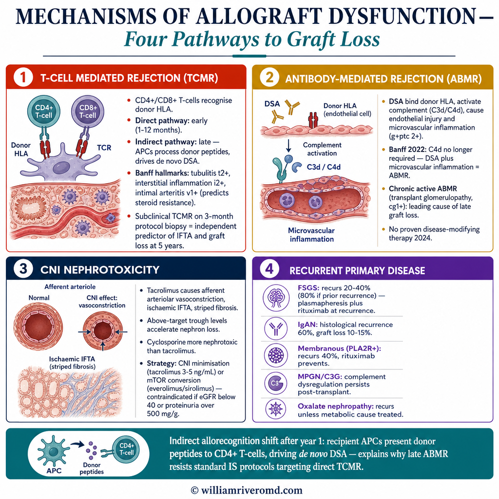
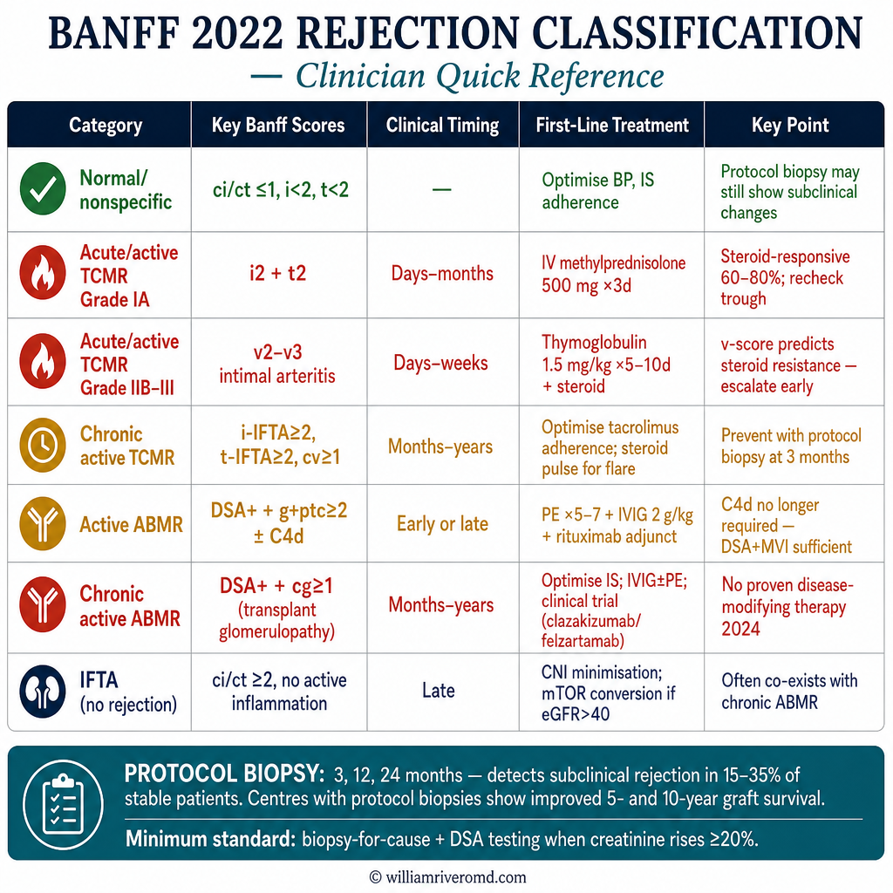
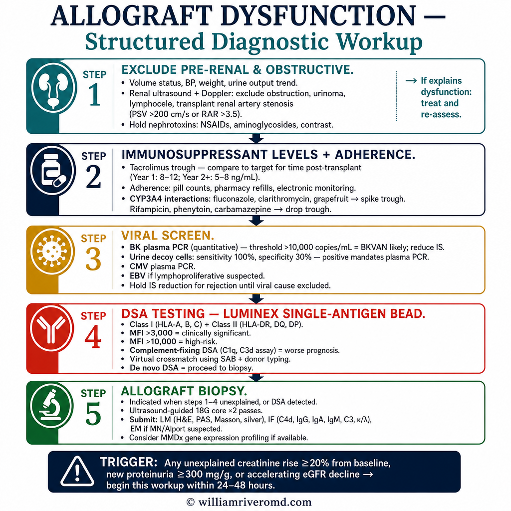
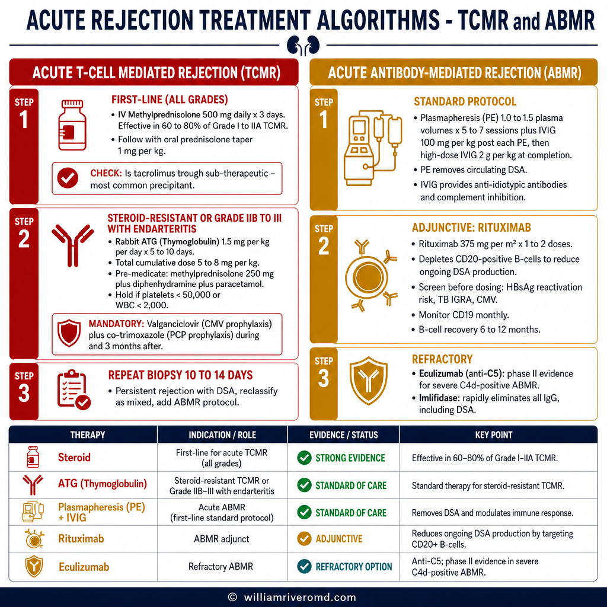
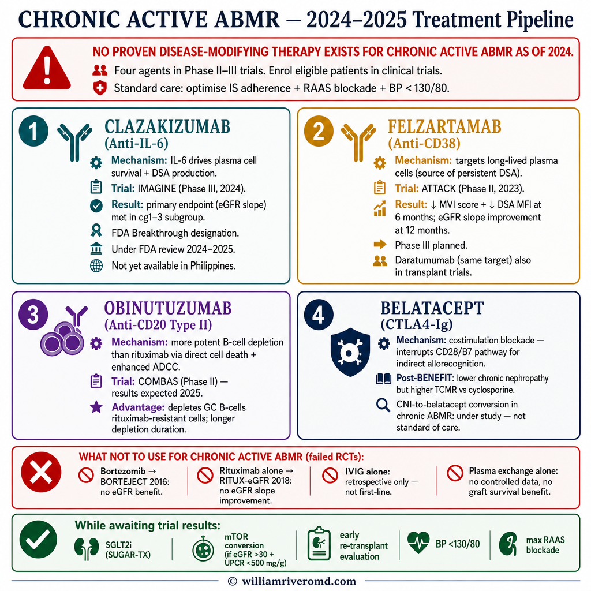

Your Transplant & How It WorksAng Inyong Transplant at Kung Paano Ito GumaganaAng Imong Transplant ug Kung Giunsa Kini Nagtrabaho

A kidney transplant places a donor kidney — the allograft — into your lower abdomen, where it connects to your blood vessels and bladder. Because it comes from another person, your immune system recognizes it as foreign. Immunosuppressive medications must be taken for the entire life of the transplant to prevent your body from attacking it. Your native kidneys are usually left in place. Ang kidney transplant ay naglalagay ng donor na bato — ang allograft — sa inyong ibabang tiyan, kung saan ito ay kumokonekta sa inyong mga daluyan ng dugo at pantog. Dahil ito ay nagmumula sa ibang tao, kinikilala ito ng inyong immune system bilang banyaga. Ang mga immunosuppressive na gamot ay dapat inumin sa buong buhay ng transplant upang maiwasan ang pag-atake ng inyong katawan dito. Ang inyong mga katutubong bato ay karaniwang inilalagay sa lugar. Ang kidney transplant nagbutang sa donor nga kidney — ang allograft — sa imong ubos nga tiyan, diin kini nagkonekta sa imong mga ugat sa dugo ug pantog. Tungod kay kini gikan sa laing tawo, ang imong immune system nakaila niini ingon nga langyaw. Ang mga immunosuppressive nga tambal kinahanglan inumon sa tibuok kinabuhi sa transplant aron mapugngan ang imong lawas sa pag-atake niini. Ang imong native nga mga kidney kasagaran gibiyaan sa dapit.
What "Allograft" MeansAno ang Ibig Sabihin ng "Allograft"Unsa ang Gipasabot sa "Allograft"
Any organ transplanted from one human to another. In nephrology, allograft specifically means your transplanted kidney — distinct from your native (original) kidneys.Anumang organ na na-transplant mula sa isang tao patungo sa isa pa. Sa nefrolohiya, ang allograft ay partikular na nangangahulugang inyong transplantadong bato — naiiba sa inyong mga katutubong bato.Bisan unsa nga organ nga gitransplant gikan sa usa ka tawo ngadto sa lain. Sa nefrolohiya, ang allograft nagpasabot sa imong gitransplant nga kidney — lahi sa imong native nga mga kidney.
ImmunosuppressionImmunosuppressionImmunosuppression
Usually tacrolimus + mycophenolate + prednisone — taken every day, as prescribed, for as long as the kidney functions. Missing doses is the most common preventable cause of rejection.Karaniwang tacrolimus + mycophenolate + prednisone — iniinom araw-araw, ayon sa reseta, habang gumagana ang bato. Ang hindi pag-inom ng gamot ay ang pinakakaraniwang maiiwasang sanhi ng pagtanggi.Kasagaran tacrolimus + mycophenolate + prednisone — giinom matag adlaw, sumala sa reseta, samtang nagtrabaho ang kidney. Ang paglaktaw sa tambal mao ang labing kasagarang mapugngang hinungdan sa pagsalikway.
Graft SurvivalKaligtasan ng GraftGraft Survival
Living-donor kidneys last ~20 years on average; deceased-donor ~14–15 years. Many function for 25–30+ years with excellent adherence and monitoring.Ang mga bato mula sa buhay na donor ay tumatagal ng humigit-kumulang 20 taon sa karaniwan; mula sa namatay na donor ~14–15 taon. Marami ang gumagana nang 25–30+ taon sa tamang pagsunod at pagmamasid.Ang mga kidney gikan sa buhi nga donor molungtad og ~20 ka tuig sa abereyds; gikan sa patay nga donor ~14–15 ka tuig. Daghan ang nagtrabaho og 25–30+ ka tuig uban sa maayong pagsunod ug pagmonitor.
Signs of a Healthy AllograftMga Palatandaan ng Malusog na AllograftMga Timailhan sa Himsog nga Allograft
Regular blood and urine tests tell your doctor how well your transplanted kidney is working. Stability of your personal baseline matters more than any single number.Ang mga regular na pagsusuri ng dugo at ihi ay nagsasabi sa inyong doktor kung gaano kagaling gumagana ang inyong transplantadong bato. Ang katatagan ng inyong personal na baseline ay mas mahalaga kaysa sa anumang isang numero.Ang mga regular nga pagsusuri sa dugo ug ihi nagsulti sa imong doktor kung unsa ka maayo ang pagtrабaho sa imong gitransplant nga kidney. Ang katatasan sa imong personal nga baseline mas importante kaysa bisan unsa nga numero.
| TestPagsusuriPagsusuri | Healthy TargetTarget na MalusogTarget nga Himsog | What It Tells Your DoctorAno ang Sinasabi Nito sa Inyong DoktorUnsa ang Gisulti Niini sa Imong Doktor |
|---|---|---|
| Serum Creatinine | Stable at YOUR baselineMatatag sa INYONG baselineLig-on sa IMONG baseline | A rise of 0.2–0.3 mg/dL above your personal stable value is a warning sign needing prompt evaluationAng pagtaas ng 0.2–0.3 mg/dL higit sa inyong personal na matatag na halaga ay isang babala na nangangailangan ng agarang pagsusuriAng pagtaas og 0.2–0.3 mg/dL labaw sa imong personal nga lig-on nga kantidad usa ka babala nga nanginahanglan og dali nga pagsusuri |
| eGFR | >60 mL/min ideal; stable trend is key>60 mL/min ang ideal; ang matatag na trend ang mahalaga>60 mL/min ideal; ang lig-on nga trend ang importante | Overall filtration capacity — declining trend is more informative than any single valueKabuuang kapasidad ng pagsala — ang nagbabang trend ay mas nagbibigay-kaalaman kaysa sa anumang solong halagaKinatibuk-ang kapasidad sa pagsala — ang nagkubos nga trend mas nagsugilon kaysa bisan unsa nga solong kantidad |
| UACR | <30 mg/g (A1) | No allograft filtration barrier damage or protein leakWalang pinsala sa filtration barrier ng allograft o pagtagas ng protinaWalay kadaot sa filtration barrier sa allograft o pagtulo sa protina |
| Tacrolimus Trough | 5–10 ng/mL | Adequate immunosuppression without drug toxicity to the allograftSapat na immunosuppression nang walang toxicity ng gamot sa allograftAngay nga immunosuppression nga walay toxicity sa tambal ngadto sa allograft |
| Blood PressurePresyon ng DugoPresyon sa Dugo | <130/80 mmHg | Uncontrolled BP accelerates allograft scarring and fibrosisAng hindi kontroladong presyon ng dugo ay nagpapabilis ng pag-ukit at fibrosis ng allograftAng dili kontrolado nga presyon sa dugo nagpadali sa pag-ukit ug fibrosis sa allograft |
| HbA1c | <7.0–7.5% | Diabetes is a major driver of allograft nephropathy — tight glucose control is protectiveAng diabetes ay isang pangunahing dahilan ng allograft nephropathy — ang mahigpit na kontrol ng glucose ay nagpoprotektaAng diabetes usa ka mayor nga hinungdan sa allograft nephropathy — ang mahigpit nga kontrol sa glucose nagpanalipod |
Your Personal Baseline Is the Reference PointAng Inyong Personal na Baseline ang SanggunianAng Imong Personal nga Baseline ang Sanggunian
A creatinine of 1.6 mg/dL is normal for you if it has been stable for years. What matters is change from your personal baseline — even a small, gradual rise over months signals a problem that needs evaluation before it becomes irreversible.Ang creatinine na 1.6 mg/dL ay normal para sa inyo kung ito ay naging matatag sa loob ng maraming taon. Ang mahalaga ay ang pagbabago mula sa inyong personal na baseline — kahit isang maliit, unti-unting pagtaas sa loob ng mga buwan ay nagpapahiwatig ng problemang kailangang suriin bago pa ito maging hindi na maaaring baguhin.Ang creatinine nga 1.6 mg/dL normal para sa imong kung kini lig-on sulod sa daghang tuig. Ang importante mao ang pagbag-o gikan sa imong personal nga baseline — bisan usa ka gagmay, hinay-hinay nga pagtaas sulod sa mga buwan nagsugilon sa problema nga kinahanglan isusuri sa wala pa kini mahimong dili na mabago.
What Is Allograft Dysfunction?Ano ang Allograft Dysfunction?Unsa ang Allograft Dysfunction?

Allograft dysfunction means the transplanted kidney is no longer working as well as it should. It exists on a spectrum — from mild and reversible to irreversible failure. The earlier it is caught, the more options you have.Ang allograft dysfunction ay nangangahulugang ang transplantadong bato ay hindi na gumagana nang kasing husay ng dapat. Ito ay nasa isang spectrum — mula sa banayad at maaaring baguhin hanggang sa hindi na maaaring baguhing pagpalya. Mas maaga itong matukoy, mas maraming pagpipilian ang mayroon kayo.Ang allograft dysfunction nagpasabot nga ang gitransplant nga kidney dili na nagtrabaho og maayo sama sa dapat. Kini naa sa usa ka spectrum — gikan sa banag ug mabag-o ngadto sa dili na mabag-ong pagkapakyas. Mas sayo kini madiskubri, mas daghang kapilian ang imong anaa.
Rising CreatinineTumataas na CreatinineNagtaas nga Creatinine
The earliest lab signal. A 20–25% rise above your personal baseline warrants same-week evaluation — do not wait for your next scheduled appointment.Ang pinakamaagang senyales sa laboratoryo. Ang pagtaas ng 20–25% higit sa inyong personal na baseline ay nangangailangan ng pagsusuri sa parehong linggo — huwag hintayin ang inyong susunod na nakatakdang appointment.Ang labing sayo nga senyales sa laboratoryo. Ang pagtaas og 20–25% labaw sa imong personal nga baseline nagkinahanglan og pagsusuri sa mao gihapong semana — ayaw hulata ang imong sunod nga naplanong appointment.
Increased ProteinuriaTumaas na ProteinuriaNagtaas nga Proteinuria
New or worsening protein in the urine signals damage to the allograft's glomerular filtration barrier. Rising UACR requires urgent workup.Ang bago o lumalalang protina sa ihi ay nagpapahiwatig ng pinsala sa glomerular filtration barrier ng allograft. Ang tumataas na UACR ay nangangailangan ng agarang pagsusuri.Ang bag-o o nagkagrabi nga protina sa ihi nagsugilon sa kadaot sa glomerular filtration barrier sa allograft. Ang nagtaas nga UACR nagkinahanglan og dali nga pagsusuri.
Worsening HypertensionLumalalang HypertensionNagkagrabi nga Hypertension
New or difficult-to-control high BP may reflect renal artery stenosis, calcineurin inhibitor toxicity, or chronic rejection — all require evaluation.Ang bago o mahirap kontroling mataas na presyon ng dugo ay maaaring magpahiwatig ng renal artery stenosis, calcineurin inhibitor toxicity, o talamak na pagtanggi — lahat ay nangangailangan ng pagsusuri.Ang bag-o o lisod kontrolon nga taas nga presyon sa dugo mahimong magsugilon sa renal artery stenosis, calcineurin inhibitor toxicity, o kronikong pagsalikway — tanan nagkinahanglan og pagsusuri.
Urgent Symptoms — Contact Your Transplant Team or ER ImmediatelyMga Agarang Sintomas — Makipag-ugnayan sa Inyong Transplant Team o ER KaagadMga Hanas nga Sintomas — Kontaka ang Imong Transplant Team o ER Dayon
- Significant decrease or sudden absence of urine outputMakabuluhang pagbaba o biglang kawalan ng pag-ihiDakong pagkunhod o biglang pagkawala sa pag-ihi
- Fever ≥38°C / 100.4°F — may signal rejection OR serious infectionLagnat na ≥38°C / 100.4°F — maaaring magpahiwatig ng pagtanggi O seryosong impeksyonHilanat nga ≥38°C / 100.4°F — mahimong magsugilon sa pagsalikway O seryosong impeksyon
- Pain or tenderness over the transplant site (lower abdomen / iliac fossa)Sakit o pagkamalambot sa lugar ng transplant (ibabang tiyan / iliac fossa)Kasakit o pagkamapusilon sa lugar sa transplant (ubos nga tiyan / iliac fossa)
- New or sudden swelling of the legs, face, or abdomenBago o biglang pamamaga ng mga binti, mukha, o tiyanBag-o o biglang pamaga sa mga tiil, nawong, o tiyan
- Severe fatigue, confusion, metallic taste, nausea, or generalized itching — signs of uremiaMatinding pagod, kalituhan, metalikong lasa, pagduduwal, o pangkalahatang pangangati — mga senyales ng uremiaGrabeng kakapoy, kalibog, metalikong lami, pagkaluya, o kinatibuk-ang pagkamangutngot — mga timailhan sa uremia
Why Allografts Fail — A TimelineBakit Nababigo ang mga Allograft — Isang TimelineNgano Napakyas ang mga Allograft — Usa ka Timeline
Different problems arise at different time points after transplant. Understanding this timeline helps your doctor identify the most likely cause quickly and choose the right treatment.Iba't ibang mga problema ang lumilitaw sa iba't ibang oras pagkatapos ng transplant. Ang pag-unawa sa timeline na ito ay tumutulong sa inyong doktor na mabilis na matukoy ang pinaka-malamang na sanhi at mapili ang tamang paggamot.Lain-laing mga problema mitungha sa lain-laing panahon human sa transplant. Ang pagsabut niining timeline tabangan ang imong doktor sa dali nga pag-ila sa labing posibleng hinungdan ug pagpili sa husto nga pagtambal.
Rejection Types & What They MeanMga Uri ng Pagtanggi at Ang Kanilang Ibig SabihinMga Klase sa Pagsalikway ug Unsa ang Gipasabot Niini
Rejection is classified by the underlying mechanism — which determines both the treatment and the prognosis. The gold standard for diagnosis is a percutaneous allograft biopsy classified by the Banff criteria.Ang pagtanggi ay inuuri ayon sa pinagbabatayan na mekanismo — na nagtatakda ng parehong paggamot at prognosis. Ang gold standard para sa diagnosis ay ang percutaneous allograft biopsy na inuuri ayon sa Banff criteria.Ang pagsalikway gipaklase sumala sa nagpailalom nga mekanismo — nga nagtakda sa parehong pagtambal ug prognosis. Ang gold standard sa diagnosis mao ang percutaneous allograft biopsy nga gipaklase sumala sa Banff criteria.
| TypeUriKlase | MechanismMekanismoMekanismo | TimelineTimelineTimeline | ReversibilityNababago BaMabag-o Ba |
|---|---|---|---|
| Hyperacute RejectionHyperacute RejectionHyperacute Rejection | Pre-formed antibodies (rare today — prevented by crossmatch testing)Pre-formed antibodies (bihira ngayon — napipigilan ng crossmatch testing)Pre-formed antibodies (bihira karon — napugngan sa crossmatch testing) | Minutes to hoursMinuto hanggang orasMga minuto ngadto sa mga oras | Almost always irreversibleHalos palaging hindi na mababagoHalos kanunay dili na mabag-o |
| Acute T-Cell RejectionAcute T-Cell RejectionAcute T-Cell Rejection | T-lymphocytes invade kidney interstitium and tubulesAng mga T-lymphocyte ay sumasalakay sa interstitium at tubules ng batoAng mga T-lymphocyte nag-invade sa interstitium ug tubules sa kidney | Days to 3 monthsMga araw hanggang 3 buwanMga adlaw ngadto sa 3 ka bulan | Usually fully reversibleKaraniwang ganap na nababagoKasagaran hingpit nga mabag-o |
| Acute AMRAcute AMRAcute AMR | Donor-specific antibodies (DSA) attack vascular endotheliumAng mga donor-specific antibodies (DSA) ay umaatake sa vascular endotheliumAng mga donor-specific antibodies (DSA) nag-atake sa vascular endothelium | Days to monthsMga araw hanggang buwanMga adlaw ngadto sa mga bulan | Partially reversible; risk of progressionBahagyang nababago; panganib ng pag-unladBahagi mabag-o; peligro sa pag-asdang |
| Chronic Active AMRChronic Active AMRChronic Active AMR | Ongoing DSA injury → transplant glomerulopathy and fibrosisPatuloy na pinsala ng DSA → transplant glomerulopathy at fibrosisPadayon nga kadaot sa DSA → transplant glomerulopathy ug fibrosis | Months to yearsMga buwan hanggang taonMga bulan ngadto sa mga tuig | Treatable; progression can be modifiedMaaaring gamutin; maaaring baguhin ang pag-unladMatablan; mabag-o ang pag-asdang |
| Chronic Allograft NephropathyChronic Allograft NephropathyChronic Allograft Nephropathy | Multifactorial: fibrosis + immune + ischemic + CNI toxicityMultifactorial: fibrosis + immune + ischemic + CNI toxicityMultifactorial: fibrosis + immune + ischemic + CNI toxicity | YearsMga taonMga tuig | Irreversible; rate of decline can be slowedHindi na mababago; ang bilis ng pagbaba ay maaaring mapabagalDili na mabag-o; ang gikusgon sa pagkunhod mabagal |
The Allograft BiopsyAng Allograft BiopsyAng Allograft Biopsy
When rejection is suspected, a percutaneous allograft biopsy is performed under ultrasound guidance — a thin needle takes a small tissue sample. The Banff classification system categorizes the findings into specific rejection patterns, which directly guides targeted treatment selection. It is a safe, outpatient procedure performed at your transplant center.Kapag pinaghihinalaang may pagtanggi, isang percutaneous allograft biopsy ang ginagawa sa ilalim ng gabay ng ultrasound — ang isang manipis na karayom ay kumukuha ng maliit na sample ng tisyu. Ang sistema ng klasipikasyon ng Banff ay nag-uuri ng mga natuklasan sa mga tiyak na pattern ng pagtanggi, na direktang ginagabayan ang pagpili ng paggamot. Ito ay isang ligtas na outpatient na pamamaraan na isinasagawa sa inyong transplant center.Kung giduduhan ang pagsalikway, usa ka percutaneous allograft biopsy ang gihimo ubos sa giya sa ultrasound — usa ka manipis nga dagom nagkuha og gamay nga sample sa tisyu. Ang sistema sa klasipikasyon sa Banff nagpaklase sa mga nakit-an ngadto sa piho nga mga pattern sa pagsalikway, nga direktang naggiya sa pagpili sa pagtambal. Usa kini ka luwas nga outpatient nga pamaagi nga gihimo sa imong transplant center.
What Happens If the Kidney Fails: Your OptionsAno ang Mangyayari Kung Mabigo ang Bato: Inyong mga PagpipilianUnsa ang Mahitabo Kung Mapakyas ang Kidney: Imong mga Kapilian

If the allograft reaches end-stage, you face a treatment transition — but with important advantages. You have prior transplant experience, an established team, and you may be eligible for re-transplant sooner than expected.Kung ang allograft ay umabot sa end-stage, kayo ay haharapin ang isang paglipat ng paggamot — ngunit may mahahalagang kalamangan. Mayroon kang nakaraang karanasan sa transplant, isang naitatag na koponan, at maaari kang maging karapat-dapat sa muling transplant nang mas maaga kaysa sa inaasahan.Kung ang allograft moabot sa end-stage, imong atubangon ang usa ka transisyon sa pagtambal — apan uban ang mga importante nga bentahe. Ikaw adunay naunang kasinatian sa transplant, usa ka natukod nga team, ug mahimong ikaw makabalhinan sa re-transplant og mas sayo kaysa sa gilauman.
Hemodialysis (HD)Hemodialysis (HD)Hemodialysis (HD)
3× weekly in-center or home HD. The failed transplant kidney is usually left in place. Can sometimes be initiated through a functioning AV fistula.3× sa isang linggo sa sentro o home HD. Ang napalyang transplant na bato ay karaniwang inilalagay sa lugar. Minsan ay maaaring simulan sa pamamagitan ng gumaganang AV fistula.3× matag semana sa sentro o home HD. Ang napakyas nga transplant nga kidney kasagaran gibiyaan sa dapit. Usahay mahimong sugdan pinaagi sa nagtrabaho nga AV fistula.
Peritoneal Dialysis (PD)Peritoneal Dialysis (PD)Peritoneal Dialysis (PD)
Daily home-based option. Can begin at eGFR 8–10 mL/min. Requires PD catheter placement — plan ahead before complete allograft failure.Pang-araw-araw na pagpipilian sa bahay. Maaaring magsimula sa eGFR 8–10 mL/min. Nangangailangan ng paglalagay ng PD catheter — magplano nang maaga bago pa ang kumpletong pagpalya ng allograft.Inadlaw nga kapilian sa balay. Mahimong sugdan sa eGFR 8–10 mL/min. Nagkinahanglan og pagbutang sa PD catheter — planohon nga daan sa wala pa ang kompleto nga pagkapakyas sa allograft.
Re-TransplantationMuling TransplantRe-Transplantasyon
The optimal therapy for eligible patients. Second transplant outcomes are comparable to first transplants. Early re-listing at eGFR 15–20 maximizes the chance of a pre-emptive transplant.Ang pinakamainam na lunas para sa mga karapat-dapat na pasyente. Ang mga resulta ng pangalawang transplant ay katulad ng mga unang transplant. Ang maagang muling pag-lista sa eGFR 15–20 ay nagpapalaki ng pagkakataon para sa pre-emptive transplant.Ang labing maayo nga lunas alang sa mga kwalipikadong pasyente. Ang mga resulta sa ikaduha nga transplant katupong sa mga unang transplant. Ang sayo nga re-listing sa eGFR 15–20 nagpadako sa kahigayunan sa pre-emptive transplant.
Conservative CareConservative CareConservative Care
Supportive management without dialysis — a valid, dignified choice for those who prioritize comfort-focused care, coordinated with palliative medicine.Suportibong pamamahala nang walang dialysis — isang wastong, marangal na pagpipilian para sa mga nagbibigay-prayoridad sa pag-aalaga na nakatuon sa kaginhawaan, na pinamamahalaan kasabay ng palliative medicine.Suportibo nga pagdumala nga walay dialysis — usa ka balido, dungganon nga kapilian alang sa mga nagprayoridad sa care nga nakasentro sa ginhawa, gitinabangnan uban sa palliative medicine.
Timing Your Transition — Do Not Wait for EmergencyAng Tamang Oras ng Inyong Paglipat — Huwag Maghintay ng EmergencyAng Oras sa Imong Transisyon — Ayaw Hulata ang Emergency
The ideal window to plan dialysis access and begin re-transplant workup is when eGFR falls to 15–20 mL/min. Waiting until complete failure forces emergency dialysis initiation — higher complication rates, worse outcomes. At NKTI, Philippines, re-listing can begin at eGFR approaching 20 mL/min.Ang pinakamagandang panahon para magplano ng dialysis access at magsimula ng re-transplant workup ay kapag ang eGFR ay bumaba sa 15–20 mL/min. Ang paghihintay hanggang sa kumpletong pagpalya ay nagpipilit sa emergency na pagsisimula ng dialysis — mas mataas na rate ng komplikasyon, mas masamang mga resulta. Sa NKTI, Pilipinas, ang muling pag-lista ay maaaring magsimula kapag ang eGFR ay malapit na sa 20 mL/min.Ang labing maayo nga panahon sa pagplano sa dialysis access ug pagsugod sa re-transplant workup mao kung ang eGFR mohulog sa 15–20 mL/min. Ang paghulat hangtod sa kompleto nga pagkapakyas nagpuwersa sa emergency nga pagsugod sa dialysis — mas taas nga rate sa komplikasyon, mas daotan nga mga resulta. Sa NKTI, Pilipinas, ang re-listing mahimong sugdan kung ang eGFR duol na sa 20 mL/min.
What Happens to the Failed Transplant Kidney?Ano ang Mangyayari sa Napalyang Transplant na Bato?Unsa ang Mahitabo sa Napakyas nga Transplant nga Kidney?
In most cases, the failed allograft is left in place. The small, scarred kidney rarely causes problems. However, transplant nephrectomy (surgical removal) may be recommended if:Sa karamihang kaso, ang napalyang allograft ay inilalagay sa lugar. Ang maliit, may pilas na bato ay bihirang magdulot ng mga problema. Gayunpaman, ang transplant nephrectomy (surgical removal) ay maaaring irerekomenda kung:Sa kadaghanan nga kaso, ang napakyas nga allograft gibiyaan sa dapit. Ang gagmay, may piklat nga kidney bihirang magdulot og mga problema. Bisan pa, ang transplant nephrectomy (surgical removal) mahimong irekomenda kung:
Recurrent infections or persistent feverPaulit-ulit na impeksyon o patuloy na lagnatBalik-balik nga impeksyon o padayon nga hilanat
The failed kidney can harbor chronic infection that does not resolve while in place, even with antibiotics.Ang napalyang bato ay maaaring magtago ng talamak na impeksyon na hindi gumagaling habang nasa lugar, kahit may antibiotics.Ang napakyas nga kidney mahimong magpuy-an sa kronikong impeksyon nga dili moayo samtang naa sa dapit, bisan uban sa antibiotics.
Chronic graft site pain or hematuriaTalamak na sakit sa lugar ng graft o hematuriaKronikong kasakit sa dapit sa graft o hematuria
Persistent bleeding or pain from the failed graft site may require surgical removal for adequate symptom control.Ang patuloy na pagdurugo o sakit mula sa lugar ng napalyang graft ay maaaring mangailangan ng surgical removal para sa sapat na kontrol ng sintomas.Ang padayon nga pagdugo o kasakit gikan sa dapit sa napakyas nga graft mahimong mangailangan og surgical removal para sa angay nga kontrol sa sintomas.
Selected cases of high sensitization for re-transplantIlang kaso ng mataas na sensitization para sa muling transplantPiling mga kaso sa taas nga sensitization alang sa re-transplant
In some patients, removal may reduce ongoing antigenic stimulus and lower DSA levels, potentially improving re-transplant candidacy. Discussed case-by-case.Sa ilang mga pasyente, ang pag-aalis ay maaaring magpababa ng patuloy na antigenic stimulus at magpababa ng mga antas ng DSA, na posibleng mapabuti ang kandidatura para sa muling transplant. Tinatalakay sa bawat kaso.Sa pipila ka mga pasyente, ang pagtangtang mahimong magkubos sa nagpadayon nga antigenic stimulus ug magpaubos sa mga antas sa DSA, posibleng mapahimut-an ang kandidatura sa re-transplant. Gihisgotan matag kaso.
Immunosuppression Withdrawal — Follow the Taper PlanPag-alis ng Immunosuppression — Sundin ang Taper PlanPag-withdraw sa Immunosuppression — Sundon ang Taper Plan
When the allograft definitively fails and dialysis resumes, immunosuppressants are tapered gradually over 3–6 months. Abrupt cessation can trigger rejection nephritis in the failed graft — causing fever, graft pain, and hematuria. Always follow your transplant team's specific tapering protocol.Kapag ang allograft ay talagang nabulto at naibalik ang dialysis, ang mga immunosuppressant ay unti-unting pinababa sa loob ng 3–6 buwan. Ang biglang paghinto ay maaaring mag-trigger ng rejection nephritis sa napalyang graft — na nagdudulot ng lagnat, sakit sa graft, at hematuria. Laging sundin ang tiyak na tapering protocol ng inyong transplant team.Kung ang allograft definitibo nang napakyas ug ang dialysis gisugdan pag-usab, ang mga immunosuppressant hinay-hinay nga gi-taper sulod sa 3–6 ka bulan. Ang biglang paghunong mahimong mag-trigger sa rejection nephritis sa napakyas nga graft — nga nagdulot og hilanat, kasakit sa graft, ug hematuria. Kanunay sundon ang piho nga tapering protocol sa imong transplant team.
Re-Transplantation: Is It Possible?Muling Transplant: Posible Ba Ito?Re-Transplantasyon: Posible Ba Kini?
For most patients who experience allograft failure, re-transplantation is a realistic and worthwhile goal. Approximately 15–20% of kidney transplants performed each year worldwide are re-transplants — and many patients have received 3 or even 4 successful kidneys over a lifetime of care. Para sa karamihang mga pasyente na nakaranas ng pagpalya ng allograft, ang muling transplant ay isang makatotohanang at sulit na layunin. Halos 15–20% ng mga kidney transplant na isinasagawa bawat taon sa buong mundo ay muling transplant — at maraming pasyente ang nakatanggap ng 3 o kahit 4 na matagumpay na mga bato sa isang habambuhay na pag-aalaga. Alang sa kadaghanan sa mga pasyente nga nakasinati sa pagkapakyas sa allograft, ang re-transplantasyon usa ka tinuod ug balor-balor nga tumong. Mga 15–20% sa mga kidney transplant nga gihimo matag tuig sa tibuok kalibutan kay re-transplant — ug daghan ka mga pasyente ang nakadawat og 3 o bisan 4 ka matugyanan nga mga kidney sulod sa tibuok kinabuhi sa pag-atiman.
| FactorSalikSalik | Favorable for Re-listingPaborable para sa Muling Pag-listaPaborable sa Re-listing | Requires Careful EvaluationNangangailangan ng Maingat na PagsusuriNagkinahanglan og Maampingon nga Pagsusuri |
|---|---|---|
| AgeEdadEdad | Any age if medically fitAnumang edad kung medikal na angkopBisan unsa nga edad kung medikal nga angay | Very elderly — cardiovascular risk assessment requiredNapaka-matanda — nangangailangan ng cardiovascular risk assessmentKaayo ka tigulang — nagkinahanglan og cardiovascular risk assessment |
| Cause of Prior FailureSanhi ng Nakaraang PagpalyaHinungdan sa Naunang Pagkapakyas | CAN, BK nephropathy, DGF-relatedCAN, BK nephropathy, kaugnay ng DGFCAN, BK nephropathy, may kalabotan sa DGF | Recurrent disease (FSGS, oxalosis) — recurrence risk must be weighedPaulit-ulit na sakit (FSGS, oxalosis) — dapat timbangin ang panganib ng pagbabalikBalik-balik nga sakit (FSGS, oxalosis) — kinahanglan timbangon ang peligro sa pagbalik |
| Sensitization (cPRA)Sensitization (cPRA)Sensitization (cPRA) | <50% — wide compatible donor pool<50% — malawak na compatible donor pool<50% — halapad nga compatible donor pool | >80% — longer wait; desensitization may be required>80% — mas matagal na paghihintay; maaaring kailangan ang desensitization>80% — mas dugay nga paghulat; ang desensitization mahimong kinahanglan |
| Adherence HistoryKasaysayan ng PagsunodKasaysayan sa Pagsunod | Documented medication complianceDokumentadong pagsunod sa gamotDokumentado nga pagsunod sa tambal | Prior non-adherence — counseling required before re-listingNakaraang hindi pagsunod — kailangan ang counseling bago muling mag-listaNaunang dili pagsunod — nagkinahanglan og counseling sa wala pa ang re-listing |
| Cardiovascular StatusKalagayan ng CardiovascularKalagayan sa Cardiovascular | Well-controlled; no recent eventsMahusay na kontrolado; walang kamakailang mga pangyayariMaayo nga kontrolado; walay bag-o nga mga hitabo | Recent MI or stroke — stabilization requiredKamakailang MI o stroke — kailangan ang stabilizationBag-o nga MI o stroke — nagkinahanglan og stabilization |
Pre-Emptive Re-Transplant: The Gold Standard OutcomePre-Emptive Re-Transplant: Ang Pinakamainam na ResultaPre-Emptive Re-Transplant: Ang Gold Standard nga Resulta
A pre-emptive re-transplant — performed before you need to return to dialysis — is the best possible outcome of allograft failure. It avoids all risks of dialysis and produces the best long-term graft and patient survival. It requires early re-listing: ideally when eGFR is still 15–20 mL/min. At NKTI, Philippines, the re-listing process can be initiated at this threshold.Ang isang pre-emptive re-transplant — na isinasagawa bago pa kayo bumalik sa dialysis — ang pinakamainam na resulta ng pagpalya ng allograft. Iniiwasan nito ang lahat ng panganib ng dialysis at nagbibigay ng pinakamahusay na pangmatagalang kaligtasan ng graft at pasyente. Nangangailangan ito ng maagang muling pag-lista: mas mainam na kapag ang eGFR ay 15–20 mL/min pa. Sa NKTI, Pilipinas, ang proseso ng muling pag-lista ay maaaring simulan sa threshold na ito.Ang usa ka pre-emptive re-transplant — gihimo sa wala pa kamo magbalik sa dialysis — mao ang labing maayo nga resulta sa pagkapakyas sa allograft. Gilikayan niini ang tanan nga mga peligro sa dialysis ug naghatag sa labing maayo nga dugay nga survival sa graft ug pasyente. Nagkinahanglan kini og sayo nga re-listing: mas maayo kung ang eGFR 15–20 mL/min pa. Sa NKTI, Pilipinas, ang proseso sa re-listing mahimong sugdan sa kining threshold.
Sensitization & the PRA/cPRA ScoreSensitization at ang PRA/cPRA ScoreSensitization ug ang PRA/cPRA Score
Your first transplant exposed your immune system to the donor's HLA proteins. After graft failure, your immune system may have formed Donor-Specific Antibodies (DSA) — antibodies that recognize HLA antigens that differ from your own. The more HLA mismatches you've been exposed to, the more sensitized you become.Ang inyong unang transplant ay inilantad ang inyong immune system sa HLA proteins ng donor. Pagkatapos ng pagpalya ng graft, ang inyong immune system ay maaaring nakabuo ng Donor-Specific Antibodies (DSA) — mga antibody na kumikikilala ng mga HLA antigen na naiiba sa inyong sarili. Mas maraming HLA mismatches ang nalantad sa inyo, mas sensitized kayo.Ang imong unang transplant gihulad sa imong immune system sa mga HLA protein sa donor. Human sa pagkapakyas sa graft, ang imong immune system mahimong nakaporma og Donor-Specific Antibodies (DSA) — mga antibody nga nakaila sa mga HLA antigen nga nagkalain-lain gikan sa imong kaugalingon. Mas daghang HLA mismatches ang imong nasinati, mas sensitized ka.
IVIG
High-dose intravenous immunoglobulin modulates antibody production and complement activation. Given over multiple monthly sessions.Ang mataas na dosis na intravenous immunoglobulin ay nagmo-modulate ng produksyon ng antibody at activation ng complement. Ibinibigay sa maraming buwanang sesyon.Ang taas nga dosis nga intravenous immunoglobulin nagmodulate sa produksyon sa antibody ug activation sa complement. Gihatag sulod sa daghang buwanang sesyon.
PlasmapheresisPlasmapheresisPlasmapheresis
Physically removes circulating DSA from the blood, rapidly lowering antibody titers. Most effective in combination with IVIG.Pisikal na inaalis ang mga umaapaw na DSA mula sa dugo, na mabilis na nagpapababa ng mga titer ng antibody. Pinakaepektibo kasama ang IVIG.Pisikal nga nagtangtang sa mga circulating DSA gikan sa dugo, dali nga nagpaubos sa mga titer sa antibody. Labing epektibo inubanan uban sa IVIG.
Rituximab & BeyondRituximab at Higit PaRituximab ug Labaw Pa
Anti-CD20 agent depletes B-cells (antibody-producing cells). Newer agents — belatacept, eculizumab, imlifidase — used in specialized protocols at experienced centers.Ang anti-CD20 agent ay nagtatanggal ng mga B-cell (mga cell na gumagawa ng antibody). Ang mga bagong ahente — belatacept, eculizumab, imlifidase — ginagamit sa mga espesyalisadong protocol sa mga may karanasang sentro.Ang anti-CD20 agent nagpagubot sa mga B-cell (mga cell nga nagprodyus og antibody). Ang mga bag-ong ahente — belatacept, eculizumab, imlifidase — gigamit sa mga espesyalisadong protocol sa mga may kasinatian nga mga sentro.
Virtual CrossmatchVirtual CrossmatchVirtual Crossmatch
Modern transplant programs compare your antibody profile against a potential donor's HLA typing computationally — identifying compatible donors within hours, even for highly sensitized recipients. This has significantly expanded transplant access for previously "untransplantable" patients.Ang mga modernong programa ng transplant ay naghahambing ng inyong profile ng antibody laban sa HLA typing ng potensyal na donor sa pamamagitan ng kompyuter — na natutukoy ang mga compatible na donor sa loob ng ilang oras, kahit para sa mga lubos na sensitized na tatanggap. Ito ay makabuluhang nagpalawak ng access sa transplant para sa mga dating "untransplantable" na pasyente.Ang mga moderno nga programa sa transplant nagkumpara sa imong profile sa antibody batok sa HLA typing sa potensyal nga donor pinaagi sa kompyuter — nag-ila sa mga compatible nga donor sulod sa pipila ka oras, bisan alang sa mga dako kaayo ka sensitized nga mga tatanggap. Kini makisignikanteng nagpalapad sa access sa transplant alang sa mga kaniadto "untransplantable" nga mga pasyente.
Allograft eGFR Trend & Time-to-Failure Calculator Allograft eGFR Trend at Time-to-Failure Calculator Allograft eGFR Trend ug Time-to-Failure Calculator
Enter two dated eGFR values to estimate your allograft's annual decline rate and how long — at the current rate — before a target eGFR threshold is reached. Use this to guide conversations with your transplant team about when to re-list and when to plan dialysis access. Ilagay ang dalawang may petsa na eGFR na halaga upang matantya ang taunang rate ng pagbaba ng inyong allograft at kung gaano katagal — sa kasalukuyang rate — bago maabot ang target na eGFR threshold. Gamitin ito upang gabayan ang mga pag-uusap sa inyong transplant team tungkol sa kung kailan muling mag-lista at kung kailan magplano ng dialysis access. Isulod ang duha ka may petsa nga mga eGFR nga kantidad aron matantya ang tinuig nga rate sa pagkunhod sa imong allograft ug kung unsa kadugay — sa kasamtangan nga rate — sa wala pa maabot ang target nga eGFR threshold. Gamiton kini aron magiya sa mga pakigpulong uban sa imong transplant team bahin sa kung kanus-a mo-relist ug kung kanus-a magplano sa dialysis access.
⚕ Linear decline model based on two data points. Actual eGFR trajectory is non-linear and varies with treatment response, complications, and adherence. Results are educational estimates only — never stored, transmitted, or used for autonomous clinical decisions. Always review with your transplant nephrologist before any management change. ⚕ Linear decline model batay sa dalawang data points. Ang aktwal na trajectory ng eGFR ay hindi linear at nag-iiba sa tugon sa paggamot, komplikasyon, at pagsunod. Ang mga resulta ay mga pagtatantya lamang para sa edukasyon — hindi kailanman nakaimbak, naipadala, o ginagamit para sa mga autonomous na klinikal na desisyon. Laging suriin kasama ang inyong transplant nephrologist bago ang anumang pagbabago sa pamamahala. ⚕ Linear decline model batay sa duha ka data points. Ang aktwal nga trajectory sa eGFR dili linear ug nagkalain-lain sa tubag sa pagtambal, komplikasyon, ug pagsunod. Ang mga resulta educational nga mga tantiya lamang — dili gyud gitipigan, gipadala, o gigamit alang sa mga autonomous nga klinikal nga desisyon. Kanunay susihon uban sa imong transplant nephrologist sa wala pa ang bisan unsa nga pagbag-o sa pagdumala.
Living Donor Re-TransplantMuling Transplant Mula sa Buhay na DonorRe-Transplant Gikan sa Buhi nga Donor
A living donor transplant — from a compatible family member, spouse, or close friend — is the single best option for most patients facing allograft failure. It eliminates the waiting list entirely and enables a pre-emptive transplant before dialysis begins.Ang transplant mula sa buhay na donor — mula sa isang compatible na miyembro ng pamilya, asawa, o malapit na kaibigan — ang pinakamainam na pagpipilian para sa karamihang mga pasyente na nakaharap sa pagpalya ng allograft. Ganap nitong inaalis ang listahan ng paghihintay at nagbibigay-daan sa pre-emptive na transplant bago pa magsimula ang dialysis.Ang transplant gikan sa buhi nga donor — gikan sa usa ka compatible nga miyembro sa pamilya, asawa, o duol nga higala — mao ang pinaka-labing maayo nga kapilian alang sa kadaghanan sa mga pasyente nga nag-atubang sa pagkapakyas sa allograft. Hingpit kining nagtangtang sa listahan sa paghulat ug nagpahimo og pre-emptive nga transplant sa wala pa magsugod ang dialysis.
Best Long-Term OutcomesPinakamainam na Pangmatagalang ResultaLabing Maayo nga Dugay nga Resulta
Living-donor kidneys have an average functional lifespan of 20+ years. Recipients of living-donor re-transplants have better graft and patient survival than those who wait years on dialysis.Ang mga bato mula sa buhay na donor ay may average na functional lifespan na 20+ taon. Ang mga tatanggap ng muling transplant mula sa buhay na donor ay may mas mahusay na kaligtasan ng graft at pasyente kaysa sa mga naghihintay ng maraming taon sa dialysis.Ang mga kidney gikan sa buhi nga donor adunay average nga functional lifespan nga 20+ ka tuig. Ang mga tatanggap sa re-transplant gikan sa buhi nga donor adunay mas maayo nga survival sa graft ug pasyente kaysa sa mga naghulat og daghang tuig sa dialysis.
No Waiting List — Scheduled ElectivelyWalang Listahan ng Paghihintay — Nakatakdang ElectivaWalay Listahan sa Paghulat — Gikasabutan Electiva
A living donor transplant is planned as elective surgery — with full preparation, optimized recipient conditioning, and ideal timing. This eliminates emergency scenarios and allows pre-emptive transplant.Ang transplant mula sa buhay na donor ay pinaplano bilang elective surgery — na may buong paghahanda, na-optimize na kondisyon ng tatanggap, at perpektong timing. Iniaalis nito ang mga emergency na sitwasyon at nagbibigay-daan sa pre-emptive na transplant.Ang transplant gikan sa buhi nga donor giplanohon ingon elective surgery — uban sa bug-os nga pagpangandam, na-optimize nga kondisyon sa tatanggap, ug perpektong timing. Giwagtang niini ang mga emergency nga sitwasyon ug nagpahimo sa pre-emptive nga transplant.
HLA Matching AdvantageKalamangan ng HLA MatchingBentahe sa HLA Matching
Related donors often share more HLA antigens, reducing the antibody formation that leads to sensitization and rejection. Sibling or parent donors frequently provide excellent HLA matches.Ang mga kaugnay na donor ay madalas na nagbabahagi ng mas maraming HLA antigen, na nagpapababa ng pagbuo ng antibody na nagdudulot ng sensitization at pagtanggi. Ang mga kapatid o magulang na donor ay madalas na nagbibigay ng mahusay na HLA matches.Ang mga may kalabotan nga donor kasagaran nagpaambit og mas daghang HLA antigen, nga nagpakubos sa pormasyon sa antibody nga mosangpot sa sensitization ug pagsalikway. Ang mga igsoon o ginikanan nga donor kasagaran naghatag og maayo nga mga HLA match.
Paired Kidney ExchangePalitan ng BatoPaired Kidney Exchange
If your donor is blood-type or HLA incompatible with you, a kidney exchange program matches them with another recipient — and you receive a compatible kidney in return. NKTI operates a paired exchange program.Kung ang inyong donor ay hindi compatible sa inyo sa blood-type o HLA, ang isang programa ng palitan ng bato ay itatapat ang inyong donor sa isa pang tatanggap — at kayo ay makakatanggap ng compatible na bato kapalit. Nagpapatakbo ang NKTI ng programa ng palitang pares.Kung ang imong donor blood-type o HLA incompatible kanimo, usa ka programa sa kidney exchange nagpait sa imong donor uban sa laing tatanggap — ug ikaw makadawat og compatible nga kidney kabalos. Ang NKTI nagpadagan og programa sa paired exchange.
Who Can Be a Living Donor?Sino ang Maaaring Maging Buhay na Donor?Kinsa ang Mahimong Buhi nga Donor?
- Age 18–65 (evaluated case-by-case up to 70)Edad 18–65 (sinusuri sa bawat kaso hanggang 70)Edad 18–65 (sinusuri matag kaso hangtod 70)
- Normal kidney function with two healthy kidneysNormal na pag-andar ng bato na may dalawang malusog na batoNormal nga pag-andar sa kidney uban sa duha ka himsog nga kidney
- No significant diabetes, uncontrolled hypertension, kidney disease, or active malignancyWalang makabuluhang diabetes, hindi kontroladong hypertension, sakit sa bato, o aktibong malignancyWalay makisignikanteng diabetes, dili kontrolado nga hypertension, sakit sa kidney, o aktibong malignancy
- Blood-type compatible — or compatible via desensitization / paired exchangeCompatible sa blood-type — o compatible sa pamamagitan ng desensitization / palitang paresCompatible sa blood-type — o compatible pinaagi sa desensitization / paired exchange
- Fully informed and voluntarily consenting — donors are never coercedGanap na may impormasyon at boluntaryong pumayag — ang mga donor ay hindi kailanman pinilitHingpit nga may impormasyon ug boluntaryong nagbuot — ang mga donor dili gyud gipugos
- Under Republic Act 9208 and NKTI protocols, living donor workup is performed at no cost to the donor in the PhilippinesSa ilalim ng Republic Act 9208 at mga protocol ng NKTI, ang workup ng buhay na donor ay isinasagawa nang walang bayad sa donor sa PilipinasUbos sa Republic Act 9208 ug mga protocol sa NKTI, ang workup sa buhi nga donor gihimo nga walay bayad sa donor sa Pilipinas
Hope & Emotional Wellbeing After Allograft FailurePag-asa at Emosyonal na Kaayohan Pagkatapos ng Pagpalya ng AllograftPaglaum ug Emosyonal nga Kaayohan Human sa Pagkapakyas sa Allograft
Losing a transplanted kidney is one of the most emotionally difficult experiences a kidney patient can face. The grief is real — you have lost an organ that gave you back your freedom, energy, and daily life. This grief is valid, and it deserves the same attention as any physical symptom.Ang pagkawala ng isang transplantadong bato ay isa sa mga pinaka-emosyonal na mahirap na karanasan na maaaring harapin ng isang pasyenteng may sakit sa bato. Ang kalungkutan ay tunay — nawala ninyo ang isang organ na nagbigay sa inyo ng inyong kalayaan, lakas, at pang-araw-araw na buhay. Ang kalungkutang ito ay may bisa, at karapat-dapat itong bigyan ng parehong pansin tulad ng anumang pisikal na sintomas.Ang pagkawala sa gitransplant nga kidney usa sa mga labing emosyonal nga lisod nga kasinatian nga mahimong atubangon sa usa ka pasyente sa kidney. Ang kasubo tinuod — nawala ang usa ka organ nga naghatag sa imong balik ang imong kagawasan, kusog, ug inadlaw nga kinabuhi. Kining kasubo balido, ug angay kini hatagan og mao gihapong pagtagad sama sa bisan unsa nga pisikal nga sintomas.
What the Evidence Tells Us About Hope After Allograft Failure Ano ang Sinasabi ng Katibayan Tungkol sa Pag-asa Pagkatapos ng Pagpalya ng Allograft Unsa ang Gisulti sa Ebidensya Bahin sa Paglaum Human sa Pagkapakyas sa Allograft
Patients who pursue re-transplantation after graft failure have significantly better long-term survival than those who remain on dialysis. The human body — and spirit — shows remarkable capacity for resilience. Here are facts to hold onto: Ang mga pasyente na naghahanap ng muling transplant pagkatapos ng pagpalya ng graft ay may makabuluhang mas mahusay na pangmatagalang kaligtasan kaysa sa mga nananatili sa dialysis. Ang katawang tao — at espiritu — ay nagpapakita ng kahanga-hangang kakayahan para sa katatagan. Narito ang mga katotohanan na dapat hawakan: Ang mga pasyente nga nagpangita og re-transplant human sa pagkapakyas sa graft adunay mas maayo nga dugay nga survival kaysa sa mga nagpabilin sa dialysis. Ang lawas sa tawo — ug espiritu — nagpakita og talagsaon nga kakayahan sa pagkamalig-on. Ania ang mga katinuoran nga angay sigawon:
- Most eligible patients who are re-listed do receive a second kidney transplantKaramihang mga karapat-dapat na pasyente na muling nasa listahan ay nakakatanggap ng pangalawang transplant ng batoKadaghanan sa mga kwalipikadong pasyente nga naka-relist nakadawat og ikaduha nga kidney transplant
- Second transplant outcomes are comparable to first transplants in the majority of published studiesAng mga resulta ng pangalawang transplant ay katulad ng mga unang transplant sa karamihang nai-publish na pag-aaralAng mga resulta sa ikaduha nga transplant katupong sa mga unang transplant sa kadaghanan sa mga gipatik nga pag-aaral
- Many patients around the world have lived decades with 2, 3, or even 4 kidney transplantsMaraming pasyente sa buong mundo ang nabuhay nang maraming dekada na may 2, 3, o kahit 4 na transplant ng batoDaghang mga pasyente sa tibuok kalibutan ang nabuhi og daghang dekada uban sa 2, 3, o bisan 4 ka kidney transplant
- A living-donor re-transplant can occur within months of failure — not yearsAng muling transplant mula sa buhay na donor ay maaaring mangyari sa loob ng ilang buwan pagkatapos ng pagpalya — hindi taonAng re-transplant gikan sa buhi nga donor mahimong mahitabo sulod sa mga bulan sa pagkapakyas — dili mga tuig
- Advances in desensitization have opened re-transplant pathways for highly sensitized patients who were previously considered untransplantableAng mga pagsulong sa desensitization ay nagbukas ng mga daan para sa muling transplant para sa mga lubos na sensitized na pasyente na dati ay itinuturing na hindi maaaring ma-transplantAng mga pagpauswag sa desensitization nagbukas sa mga dalan sa re-transplant alang sa mga dako kaayo ka sensitized nga mga pasyente nga kaniadto giisip nga dili mabaw transplant
Practical Steps for Emotional SupportMga Praktikal na Hakbang para sa Emosyonal na SuportaMga Praktikal nga Lakang alang sa Emosyonal nga Suporta
- Request a referral to the transplant social worker or psychologist — standard of care, not a sign of weaknessHumiling ng referral sa transplant social worker o psychologist — pamantayan ng pag-aalaga, hindi tanda ng kahinaanMangayo og referral sa transplant social worker o psychologist — pamantayan sa pag-atiman, dili timailhan sa kahuyang
- Connect with peer support groups for transplant recipients — NKTI maintains active patient support networksMakipag-ugnayan sa mga grupo ng peer support para sa mga tatanggap ng transplant — nagpapanatili ang NKTI ng mga aktibong network ng suporta sa pasyenteMakig-ugnay sa mga grupo sa peer support alang sa mga tatanggap sa transplant — nagpadayon ang NKTI og mga aktibo nga network sa suporta sa pasyente
- Keep close family members informed and involved in your re-transplant planning — family support strongly improves outcomesPanatilihing may kaalaman at kasangkot ang mga malapit na miyembro ng pamilya sa inyong pagpaplano para sa muling transplant — ang suporta ng pamilya ay lubos na nagpapabuti ng mga resultaPadayong ipahibalo ug iapil ang mga duol nga miyembro sa pamilya sa imong pagplano sa re-transplant — ang suporta sa pamilya kusog nagpahimsog sa mga resulta
- Spiritual care — chaplaincy, faith community, or personal practice — is a validated component of resilience in chronic illnessAng pag-aalaga ng espirituwal — chaplaincy, komunidad ng pananampalataya, o personal na pagsasanay — ay isang napatunayan na bahagi ng katatagan sa talamak na sakitAng spiritual care — chaplaincy, komunidad sa pagtuo, o personal nga pamaagi — usa ka napatunayang sangkap sa pagkamalig-on sa kronikong sakit
Questions to Ask Your Transplant NephrologistMga Tanong na Itatanong sa Inyong Transplant NephrologistMga Pangutana nga Itatanong sa Imong Transplant Nephrologist
Being prepared with specific questions makes the most of your consultation time — and ensures nothing important is left unaddressed.Ang paghahanda ng mga tiyak na tanong ay nagpapalaki ng inyong oras sa konsultasyon — at tinitiyak na walang mahalaga ang hindi nasasagot.Ang pagpangandam og piho nga mga pangutana nagpalambo sa imong oras sa konsultasyon — ug nagtiyak nga walay importante ang wala masulbad.
My Questions for My DoctorMga Tanong Ko para sa Aking DoktorAkong mga Pangutana alang sa Akong Doktor
- What is my current eGFR trend — how fast is my allograft declining per year?Ano ang kasalukuyang eGFR trend ko — gaano kabilis bumababa ang aking allograft bawat taon?Unsa ang akong kasamtangan nga eGFR trend — unsa ka dali nagkubos ang akong allograft matag tuig?
- Has a biopsy been done? What is the Banff classification, and does it change treatment?Nagawa na ba ang biopsy? Ano ang klasipikasyon ng Banff, at nagbabago ba ito ng paggamot?Nahimo na ba ang biopsy? Unsa ang klasipikasyon sa Banff, ug nagbag-o ba kini sa pagtambal?
- Are there still-reversible causes we have not fully addressed — drug levels, blood pressure, occult infection?Mayroon pa bang mga sanhi na mababago na hindi pa namin ganap na nasasagot — mga antas ng gamot, presyon ng dugo, nakatagong impeksyon?Aduna pa bay mga mabag-o nga hinungdan nga wala pa nato hingpit matubag — mga antas sa tambal, presyon sa dugo, nakatago nga impeksyon?
- When should I be re-listed for kidney transplant? Can it be pre-emptive?Kailan dapat muling ilista para sa kidney transplant? Maaari ba itong maging pre-emptive?Kanus-a kinahanglan akong i-relist alang sa kidney transplant? Mahimong ba kini pre-emptive?
- What is my current cPRA / sensitization level, and how does it affect expected waiting time?Ano ang kasalukuyang antas ng cPRA / sensitization ko, at paano ito nakaka-apekto sa inaasahang oras ng paghihintay?Unsa ang akong kasamtangan nga antas sa cPRA / sensitization, ug giunsa kini nagaapekto sa gilauman nga oras sa paghulat?
- Should I be evaluated for a desensitization protocol? Is this available at our center?Dapat ba akong suriin para sa isang protocol ng desensitization? Available ba ito sa aming sentro?Kinahanglan ba akong susihon alang sa usa ka protocol sa desensitization? Available ba kini sa atong sentro?
- Is there a family member or friend who should be evaluated as a living donor now?Mayroon bang miyembro ng pamilya o kaibigan na dapat suriin bilang buhay na donor ngayon?Aduna bay miyembro sa pamilya o higala nga kinahanglan susihon ingon buhi nga donor karon?
- What dialysis access should I prepare — AV fistula or peritoneal dialysis catheter?Anong dialysis access ang dapat ihanda — AV fistula o peritoneal dialysis catheter?Unsa nga dialysis access ang kinahanglan akong ihanda — AV fistula o peritoneal dialysis catheter?
- When should we begin tapering immunosuppression, and what is the exact taper plan?Kailan dapat nating simulan ang pagpapababa ng immunosuppression, at ano ang eksaktong taper plan?Kanus-a kinahanglan naton sugdon ang pag-taper sa immunosuppression, ug unsa ang eksaktong taper plan?
- Should the failed allograft be surgically removed, or is it safe to leave in place?Dapat bang operahin at alisin ang napalyang allograft, o ligtas bang iwan sa lugar?Kinahanglan ba nga operahon ug tangtangon ang napakyas nga allograft, o luwas bang biyaan sa dapit?
- Can I meet with the transplant social worker or psychologist?Maaari ba akong makipagkita sa transplant social worker o psychologist?Mahimong ba akong makigkita sa transplant social worker o psychologist?
- Realistically — given my cPRA, cause of failure, and overall health — what is the expected timeline for a second transplant?Sa katotohanan — dahil sa aking cPRA, sanhi ng pagpalya, at pangkalahatang kalusugan — ano ang inaasahang timeline para sa pangalawang transplant?Sa tinuod — basi sa akong cPRA, hinungdan sa pagkapakyas, ug kinatibuk-ang kalusugan — unsa ang gilauman nga timeline alang sa ikaduha nga transplant?

W. G. M. Rivero, MD, FPCP, DPSN
Specialist in Internal Medicine, Nephrology, and Clinical Nutrition.Espesyalista sa Panloob na Medisina, Nefrolohiya, at Klinikal na Nutrisyon.Espesyalista sa Internal nga Medisina, Nefrolohiya, ug Klinikal nga Nutrisyon. Practicing evidence-based nephrology with integrative nutritional approaches across Quezon City, Pampanga, and Bulacan.
PRC 0105184 · seriousmd.com/doc/williamrivero ·

Allograft Failure: Global & Philippine Data
Allograft failure remains the leading cause of ESKD among previously transplanted patients. Globally, 10-year death-censored graft survival is approximately 65–70% for deceased-donor and 75–80% for living-donor kidneys (USRDS 2023). Immunological causes — particularly chronic active ABMR — account for up to 40% of late graft loss; non-immunological causes (CNI nephrotoxicity, hypertension, recurrent disease) contribute the remainder. In the Philippines, NKTI data indicate <400 kidney transplants are performed annually (2022), with re-transplant comprising <5% of procedures nationally — primarily limited by organ availability and sensitisation barriers.
| Cause of Graft Loss | Proportion of Late Failures | Median Time to Failure | Modifiable Risk Factors |
|---|---|---|---|
| Chronic active ABMR | ~40% | 5–10 years | DSA monitoring, CNI adherence, de novo DSA prevention |
| T-cell mediated rejection (TCMR) | ~10% | Variable (early & late) | IS adherence, dose optimisation |
| CNI nephrotoxicity | ~15% | 5–15 years | CNI minimisation, mTOR conversion, BP control |
| Recurrent primary disease | ~10% | Variable (FSGS: early; IgAN: late) | Disease-specific prophylaxis (rituximab for FSGS, RAAS blockade for IgAN) |
| De novo GN / TMA | ~5% | Variable | Eculizumab for aHUS; ACEi/ARB for proteinuric GN |
| BK virus nephropathy (BKVAN) | ~5% | 1–3 years | IS reduction, BK monitoring protocol |
| Polyoma nephropathy / other infections | ~3% | Variable | Surveillance, IS reduction |
| Non-compliance / IS discontinuation | ~10% | Any time | Patient education, socioeconomic support, adherence monitoring |
Mechanisms of Allograft Dysfunction

Chronic allograft failure results from overlapping immunological and non-immunological insults. Distinguishing these on biopsy — and understanding their mechanistic targets — is essential for treatment selection and trial eligibility.
T-Cell Mediated Rejection (TCMR)
CD4⁺/CD8⁺ T-cells recognise donor HLA (direct pathway: early; indirect: late). Banff hallmarks: tubulitis (t≥2), interstitial inflammation (i≥2), intimal arteritis (v≥1). Endarteritis (v-score) predicts corticosteroid resistance. Subclinical TCMR on protocol biopsy at 3 months is an independent predictor of IFTA and graft failure at 5 years.
Antibody-Mediated Rejection (ABMR)
DSA bind donor HLA → activate complement (C3d, C4d) → endothelial injury → microvascular inflammation (g+ptc ≥2). Banff 2022 eliminated mandatory C4d — DSA + microvascular inflammation alone is sufficient for ABMR diagnosis. Chronic active ABMR (transplant glomerulopathy, cg ≥1) is the single most important cause of late graft loss and has no proven effective therapy.
CNI Nephrotoxicity
Tacrolimus causes afferent arteriolar vasoconstriction, ischaemic IFTA, and striped fibrosis. Chronic exposure above target trough accelerates loss of functioning nephrons. Cyclosporine is more nephrotoxic. CNI minimisation (targeting tacrolimus 3–5 ng/mL) or conversion to mTOR inhibitor (everolimus/sirolimus) reduces progression — but mTOR agents carry proteinuria risk if eGFR <40 mL/min.
Recurrent Primary Disease
FSGS recurs in 20–40% of transplants (80% if prior recurrence); IgAN recurs histologically in up to 60% but causes graft loss in 10–15%. Membranous nephropathy (PLA2R-positive): recurs in 40%; rituximab prevents and treats recurrence. Oxalate nephropathy: recurs unless oxalate production treated. MPGN/C3 glomerulopathy: complement dysregulation persists post-transplant.
The Indirect Allorecognition Pathway — Key to Late ABMR
After the first year, direct allorecognition wanes as passenger leukocytes are cleared. The indirect pathway (recipient APCs present processed donor peptides to CD4⁺ T-cells) becomes dominant and drives de novo DSA formation. This explains why late ABMR is difficult to prevent with current IS protocols — tacrolimus does not suppress indirect allorecognition as effectively as direct-pathway TCMR. Costimulation blockade (belatacept, vobarilizumab) is specifically designed to interrupt this pathway.
Rejection Classification — Banff 2022 Update

The Banff classification (updated 2022) is the international standard for allograft pathology reporting. Key 2022 changes: C4d deposition is no longer required for ABMR diagnosis; chronic active TCMR was formally defined; microvascular inflammation scoring refined. All clinically indicated biopsies should be reported using Banff criteria.
| Category | Banff 2022 Diagnostic Criteria | Key Scores | Clinical Timing | First-Line Treatment |
|---|---|---|---|---|
| Normal / nonspecific changes | No rejection features; may have mild IFTA | ci/ct ≤1, i <2, t <2 | — | Optimise BP, IS adherence monitoring |
| Hyperacute ABMR | Preformed DSA + severe microvascular thrombosis + fibrin thrombi | g3, ptc3; C4d3 | Minutes–hours | Emergent allograft nephrectomy |
| Acute/active TCMR (Grade IA) | Significant interstitial inflammation + mild tubulitis | i2 + t2 (no arteries) | Days–months | IV methylprednisolone 500 mg × 3 days |
| Acute/active TCMR (Grade IB) | Significant interstitial inflammation + severe tubulitis | i2 + t3 | Days–months | IV methylprednisolone 500 mg × 3 days; thymoglobulin if no response |
| Acute/active TCMR (Grade IIA/IIB) | Mild–severe intimal arteritis | v1 or v2 | Days–months | Thymoglobulin 1.5 mg/kg × 5–10 days + steroid pulse |
| Acute/active TCMR (Grade III) | Transmural arteritis or arterial fibrinoid necrosis | v3 | Early | Thymoglobulin; consider plasmapheresis if DSA co-present |
| Chronic active TCMR | i-IFTA ≥2 + t-IFTA ≥2 ± intimal fibrosis (cv ≥1) | ci ≥2, ct ≥2 | Months–years | Optimise tacrolimus; steroid pulse for flare |
| Active ABMR | DSA + microvascular inflammation (g+ptc ≥2) ± C4d ± endothelial injury transcripts | g+ptc ≥2; DSA+ | Early or late | IVIG 2 g/kg + plasmapheresis × 5–7; rituximab adjunct |
| Chronic active ABMR | DSA + cg ≥1 (transplant glomerulopathy) + microvascular inflammation ± PTC multilayering | cg ≥1; DSA+ | Months–years | Optimise IS; IVIG ± PE; clinical trial eligibility; clazakizumab, felzartamab |
| IFTA (no rejection) | Interstitial fibrosis + tubular atrophy without active rejection features | ci/ct ≥2 | Late | CNI minimisation; BP control; mTOR conversion if tolerated |
Protocol Biopsy Schedule — Banff Recommendation
Protocol (surveillance) biopsies at 3, 12, and 24 months post-transplant detect subclinical rejection in 15–35% of stable patients with normal creatinine. Centres with protocol biopsy programmes show improved 5- and 10-year graft survival. For resource-limited settings (including most Philippine transplant centres), biopsy-for-cause with DSA testing is the minimum standard. Gene expression profiling (Molecular Microscope® MMDx) is complementary but not yet widely available in the Philippines.
Allograft Dysfunction — Diagnostic Protocol

A structured workup distinguishes immunological from non-immunological causes and guides biopsy timing. The priority sequence below applies to any patient with unexplained rise in serum creatinine ≥20% from baseline, new proteinuria ≥300 mg/g, or accelerating eGFR decline.
Exclude pre-renal and obstructive causes
Volume status, BP, weight. Bladder scan / renal ultrasound with Doppler to exclude obstruction, urinoma, lymphocele, renal artery stenosis (PSV >200 cm/s or RAR >3.5). Urine output trend. Hold nephrotoxins (NSAIDs, contrast, aminoglycosides).
Immunosuppressant levels + adherence assessment
Tacrolimus trough (compare to institutional target for time post-transplant). Adherence assessment — pill counts, pharmacy refill records, electronic monitoring if available. CYP3A4 interactions (fluconazole, clarithromycin, grapefruit) can rapidly elevate or drop tacrolimus levels.
Viral screen
BK virus plasma PCR (quantitative). CMV plasma PCR. EBV PCR if lymphoproliferative disease suspected. Urine decoy cells (sensitivity 100%, specificity 30% for BKVAN — positive result mandates plasma PCR).
DSA testing — Luminex single-antigen bead (SAB) assay
Test class I (HLA-A, B, C) and class II (HLA-DR, DQ, DP). Report MFI values — MFI >3,000 clinically significant; MFI >10,000 high-risk. Virtual crossmatch using SAB + donor HLA typing. Complement-fixing DSA (C1q assay, C3d assay) predict worse biopsy findings and graft survival.
Allograft biopsy
Indicated when steps 1–4 do not explain dysfunction, or when DSA is detected. Ultrasound-guided 18G core biopsy × 2 passes. Submit for light microscopy (H&E, PAS, Masson trichrome, silver methenamine), immunofluorescence (C4d, IgG, IgA, IgM, C3, fibrinogen, κ/λ), and electron microscopy if membranous nephropathy or Alport suspected. Consider MMDx gene expression profiling if available.
eGFR slope calculation
Calculate annualised eGFR decline using CKD-EPI. Decline <−2 mL/min/yr: monitor closely. Decline >−4 mL/min/yr: urgent workup. Decline >−8 mL/min/yr: consider hospice/comfort-directed care discussion alongside re-transplant evaluation. Use eGFR slope, not creatinine doubling, as primary endpoint for clinical decisions.
Immunosuppression Monitoring Targets & Thresholds
| Drug / Parameter | Early Target (0–3 mo) | Maintenance Target (>6 mo) | Threshold for Action | Common Pitfalls |
|---|---|---|---|---|
| Tacrolimus trough (C0) | 8–12 ng/mL | 5–8 ng/mL (low-risk); 6–10 ng/mL (high DSA risk) | <4: under-IS; >15: toxicity, BKVAN risk | CYP3A4 interactions; missed doses before trough draw; diarrhoea elevates absorption |
| Tacrolimus C2 (2h post-dose) | Not routine | Target 15–20× C0 ratio (extended-release only) | Extended-release conversion: bioequivalence NOT 1:1 | Extended-release (Advagraf) dosed once daily; conversion ratio 0.7–0.85× total daily dose |
| Cyclosporine C0 / C2 | C2: 1,000–1,400 ng/mL | C0: 100–150 ng/mL; C2: 600–800 ng/mL | C0 >200: nephrotoxicity risk; C2 >1,500: acute toxicity | C2 more predictive of outcome than C0 for cyclosporine |
| Mycophenolate MPA-AUC₀₋₁₂ | 30–60 mg·h/L | 30–45 mg·h/L | <20: risk of rejection; GI toxicity common above 60 | Enteric-coated mycophenolate (Myfortic) has different AUC profile; do not substitute equivalently |
| Everolimus C0 | 5–8 ng/mL (with reduced CNI) | 3–8 ng/mL | <3: subtherapeutic; >10: haematologic toxicity, wound healing | Pneumonitis (5–15%); proteinuria — avoid if eGFR <40 or UPCR >500 mg/g |
| Sirolimus C0 | 10–15 ng/mL (with CNI withdrawal) | 5–10 ng/mL | >20: marrow suppression, hyperlipidaemia | Dyslipidaemia requires statin; delayed wound healing post-op — delay conversion >3 months post-transplant |
| Prednisolone | 20 mg/day tapering | 5 mg/day (or steroid-free protocol if low-risk) | Adrenal suppression <5 mg/day usually safe | Stress-dose required for surgery/sepsis: hydrocortisone 50 mg q8h; withdraw slowly |
| BK viremia (plasma PCR) | Monthly × 6 months, then q3 months | Annually or when IS increased | <1,000 cp/mL: watch; >10,000: BKVAN risk — reduce IS by 25–50% | Never reduce both tacrolimus and mycophenolate simultaneously — staggered reduction preferred |
| DSA (SAB assay) | At 3 months (baseline) | Annually; after any rejection episode | Any new de novo DSA: biopsy; MFI >10,000: urgent workup | False-positive DSA at low MFI (<1,500) in denatured bead assay — confirm with C1q/C3d or titration |
| eGFR slope | At 3 months (baseline) | Every 6–12 months | >−4 mL/min/yr: protocol biopsy; >−8: urgent workup + re-transplant evaluation | Single creatinine rise misleading — eGFR slope over ≥6 months more actionable |
| Proteinuria (UPCR) | At 3 months (baseline) | Every 6 months | >300 mg/g creatinine: ACEi/ARB; >1,000: biopsy | UACR preferred over UPCR for early detection of glomerular proteinuria in transplant |
| CMV viremia | Weekly × 12–16 weeks (D+/R−); monthly (D+/R+) | As clinically indicated | >500 IU/mL (or institutional threshold): valganciclovir 900 mg bid dose-adjusted for eGFR | CMV tissue invasive disease can occur without high viremia — monitor symptoms |
SGLT2 Inhibitors Post-Transplant — Emerging Standard of Care
Post hoc analysis of DAPA-CKD showed 50% relative risk reduction in CKD progression in transplant recipients. SUGAR-TX (RCT, 2024): dapagliflozin 10 mg significantly reduced eGFR decline in stable transplant recipients (eGFR ≥25, UPCR ≥200 mg/g). Key safety: increased UTI risk (screen and treat before starting); genital mycotic infections; euglycaemic DKA (rare but recognised in transplant recipients — hold perioperatively). KDIGO 2024 suggests SGLT2i as adjunct renoprotective therapy in transplant recipients with proteinuria. Not yet in Philippine PhilHealth formulary — patient access limited to private purchase.
Treatment of Acute Rejection Episodes

Acute TCMR — Treatment Algorithm
Acute ABMR — Treatment Algorithm
| Agent | Mechanism | Evidence Level | Key Practical Points |
|---|---|---|---|
| IV Methylprednisolone | Broad anti-inflammatory; lymphocyte apoptosis | Strong evidence — TCMR | Hyperglycaemia monitoring; avoid in active GI bleed; not sufficient alone for ABMR |
| Rabbit ATG (Thymoglobulin) | T-cell depletion via complement + ADCC | Standard for steroid-resistant TCMR | CMV/PCP prophylaxis mandatory; thrombocytopenia common; total cumulative dose matters |
| IVIG + Plasmapheresis | DSA removal + anti-idiotypic neutralisation | Standard for acute ABMR — no RCT vs no treatment | IVIG cost significant in Philippines; PE requires specialised equipment; 5-session minimum |
| Rituximab | Anti-CD20 B-cell depletion | Adjunct to PE/IVIG; no standalone RCT for acute ABMR | Single dose often used; HBV reactivation risk; delayed effect (2–4 weeks for B-cell nadir) |
| Eculizumab | Anti-C5 complement inhibition | Phase II; not yet standard of care | Requires meningococcal prophylaxis; very expensive; NKTI does not stock routinely |
Chronic Active ABMR — Current Evidence & 2024–2025 Pipeline

Chronic active ABMR (transplant glomerulopathy, Banff cg ≥1) has no proven disease-modifying therapy as of 2024. The historical use of IVIG, rituximab, and bortezomib failed to show graft survival benefit in adequately powered trials (RITUX-eGFR, BORTEJECT). However, the field is rapidly evolving — four agents are in phase II–III trials targeting different steps in the ABMR cascade. Enrolment in clinical trials should be prioritised for eligible patients.
Clazakizumab (anti-IL-6)
IL-6 drives plasma cell survival and DSA production. IMAGINE trial (phase III, 2024 results): clazakizumab 25 mg SC monthly vs placebo in chronic active ABMR — primary endpoint (eGFR slope) met in post-hoc analysis of cg1–3 subgroup; FDA Breakthrough designation. Currently under FDA review. Not yet available in Philippines.
Felzartamab (anti-CD38)
CD38 targets long-lived plasma cells — the source of persistent DSA. ATTACK trial (phase II, 2023): felzartamab significantly reduced MVI score and DSA MFI at 6 months in chronic active ABMR vs placebo; eGFR slope improvement at 12 months. Phase III planned. Daratumumab (same target) also in transplant trials.
Imlifidase (IdeS)
IgG-cleaving cysteine protease from Streptococcus; rapidly eliminates all circulating IgG (including DSA) within 6 hours. Approved in EU/UK (Idefirix) for highly sensitised pre-transplant patients. Phase II data in acute ABMR. Not approved in Philippines or USA — EAP access possible.
Obinutuzumab (anti-CD20, type II)
More potent B-cell depletion than rituximab via direct cell death + enhanced ADCC. Phase II trial (COMBAS) in chronic active ABMR — results expected 2025. Advantage over rituximab: depletes GC B-cells rituximab-resistant cells; longer B-cell depletion.
Belatacept (CTLA4-Ig)
Costimulation blockade — interrupts CD28/B7 pathway for indirect allorecognition. Post-BENEFIT data: lower chronic allograft nephropathy but higher acute TCMR rates vs cyclosporine. Conversion from CNI to belatacept in established chronic active ABMR under study — not standard of care but logical mechanistic target.
Current Centre Practice (No Trial)
In the absence of proven therapy: optimise tacrolimus adherence (electronic monitoring where available), maximise RAAS blockade (ARB preferred for proteinuria), treat hypertension (target <130/80 mmHg), use SGLT2i for proteinuric cases (post-SUGAR-TX), consider mTOR conversion (if eGFR >30 and UPCR <500 mg/g), and initiate re-transplant evaluation early.
Evidence-Based Summary: What NOT to Use for Chronic Active ABMR
Bortezomib: BORTEJECT RCT (2016) — no eGFR benefit vs placebo in established chronic ABMR. Rituximab alone: RITUX-eGFR RCT (2018) — no eGFR slope improvement at 3 years. IVIG alone: retrospective data only; not recommended as monotherapy. Plasma exchange alone: no controlled data; may temporarily reduce DSA MFI without graft benefit. These agents are not first-line outside of clinical trial contexts for chronic active ABMR.
Second Kidney Transplant — Candidacy & Workup
Re-transplantation offers a 10–20% improvement in graft survival vs first transplant with appropriate patient selection, and significantly better outcomes than remaining on dialysis. Key barriers: elevated cPRA, comorbidity accumulation, vascular access depletion, and limited organ availability. Evaluation should begin when eGFR <20 mL/min/1.73m² to allow waitlist time to accumulate.
Pre-Listing Evaluation Checklist — Re-Transplant
- DSA / cPRA: Repeat Luminex SAB assay for class I and II DSA. Calculate cPRA using current UNOS/NKTI algorithm. Document all unacceptable antigens. Virtual crossmatch using donor HLA if deceased-donor. Physical crossmatch mandatory for living-donor regardless of DSA.
- Cardiac evaluation: ECG, echo (EF >40% required). Stress testing (dobutamine echo or nuclear) if symptomatic, DM, age >50, or prior CAD. Coronary angiography if stress test positive or inconclusive. Cardiac clearance from cardiologist in writing.
- Vascular imaging: CT angiography of abdomen/pelvis or Doppler if prior iliac vascular access, AAA, or prior transplant nephrectomy. Assess remaining iliac vessels and renal artery targets. Prior right iliac often mandates left-sided re-transplant.
- Failed allograft status: Assess for symptomatic graft (pain, haematuria, fever). Measure DSA trend — if failed allograft is driving sensitisation flare, early nephrectomy may reduce cPRA before listing. Quiescent grafts on low-dose IS can be monitored.
- Infectious clearance: HIV Ab/viral load (if HIV+, transplant possible with CD4 >200 and undetectable VL). HBV sAg, HBV-DNA. HCV Ab + HCV-RNA (DAA-treated HCV no longer a contraindication). IGRA for TB (prophylaxis with isoniazid 9 months). HTLV-1 serology (endemic in Philippines).
- Malignancy screening: Age/sex-appropriate: colonoscopy (≥45 or prior adenoma), mammogram (women ≥40), Pap smear, PSA (men ≥50), skin examination. Confirm ≥5-year disease-free interval for most malignancies (except non-melanoma skin cancer). PTLD workup if prior rituximab or EBV mismatch.
- Recurrent disease risk: Identify original cause of ESKD (if known). High-risk diseases: primary FSGS (20–40% recurrence), oxalate nephropathy (near 100% without metabolic treatment), anti-GBM (wait >12 months, ensure ANCA-negative). Document and counsel patient.
- Psychosocial and adherence assessment: Identify root cause of first graft failure — if non-compliance, structured adherence programme and transplant psychiatry clearance required. Financial sustainability assessment for post-transplant immunosuppression (tacrolimus cost ~₱8,000–12,000/month in Philippines without PhilHealth BKCS coverage).
- IS bridge strategy: Maintain low-dose tacrolimus (1–2 mg/day) + low-dose mycophenolate during the waitlist period to prevent sensitisation flare from failed allograft antigen stimulation. Taper to lowest tolerated dose — do NOT abruptly discontinue IS while failed graft remains in situ.
- Dialysis access planning: If eGFR <15 and re-transplant not imminent (>12 months estimated wait), initiate AV fistula planning. PD catheter if no venous access. Home dialysis preferred for active re-transplant candidates (better fluid management, preserve residual function).
Re-Transplant Outcomes vs Remaining on Dialysis
USRDS data: re-transplant recipients have 50–60% lower all-cause mortality vs matched patients remaining on dialysis (HR ~0.45). 5-year graft survival for second transplant: ~72% (living donor) and ~60% (deceased donor) — lower than first transplant due to higher immunological risk, but substantially better than dialysis. Early listing (>6 months pre-ESKD) significantly improves outcomes by reducing time on dialysis and preventing sensitisation drift.
Desensitisation Protocols — Highly Sensitised Patients (cPRA >80%)
Desensitisation aims to reduce or eliminate DSA to enable transplantation across a previously incompatible crossmatch. No protocol has RCT evidence demonstrating long-term benefit over remaining on dialysis. Shared decision-making with realistic expectation-setting is essential — desensitised patients have higher rejection risk than non-sensitised patients.
| Protocol Component | Dose / Schedule | Mechanism | Evidence Level | Notes |
|---|---|---|---|---|
| Plasmapheresis (PE) | 1.0–1.5 plasma volumes × 5–10 sessions pre-transplant; continue post-transplant if high-risk | Physical removal of circulating IgG including DSA | Observational; no placebo RCT | Transient effect only — DSA rebounds within 10–14 days. Must be combined with B-cell suppression for sustained reduction |
| IVIG (high-dose) | 2 g/kg (max 140 g) as single infusion after PE completion; or 100 mg/kg after each PE session | Anti-idiotypic neutralisation; Fc-receptor blockade; complement inhibition; immunomodulation | Observational — Vo et al., 2008 CEDARS data; no placebo RCT | Expensive in Philippines. Monitor renal function (hyperosmolality risk). IgA-deficient patients: anaphylaxis risk — check IgA level before first dose |
| Rituximab (adjunct) | 375 mg/m² × 1–2 doses pre-transplant | CD20+ B-cell depletion — reduces memory B-cells that produce DSA | Adjunct — no standalone desensitisation RCT | Does NOT deplete long-lived plasma cells (CD20-negative) — hence DSA reduction is partial. Screen HBV, TB, CMV before dosing |
| Imlifidase (IdeS) | 0.25 mg/kg IV single dose 12–24h pre-transplant | IgG-cleaving enzyme — rapidly eliminates all IgG (including DSA) to allow crossmatch conversion | Phase II/III in EU; EU/UK approved (Idefirix) | For cPRA 100% patients only. Enables transplantation in previously impossible crossmatches. DSA returns within 2–3 weeks — post-transplant PE/IVIG essential. Not approved in Philippines/USA |
| Clazakizumab (pre-transplant protocol) | 25 mg SC monthly × 6 months pre-transplant | IL-6 blockade → plasma cell survival reduction → DSA MFI reduction | Phase II desensitisation trial — 2023 data | 3 patients converted from positive to negative virtual crossmatch. Phase III enrolling. Not yet commercially available |
| Felzartamab (anti-CD38) | 16 mg/kg IV q2 weeks × 6 doses | Long-lived plasma cell depletion — targets the source of persistent DSA | ATTACK trial — phase II in chronic ABMR; desensitisation use emerging | Daratumumab (approved myeloma drug, same target) used off-label in some centres. Interferes with blood bank crossmatching — notify blood bank before use |
Philippine Access Context
IVIG and plasmapheresis are available at NKTI and major private transplant centres in Metro Manila but are not covered under PhilHealth BKCS (Benefit Package for Kidney Disease, Class Z). Rituximab is available (MabThera/biosimilars) but cost remains prohibitive for most patients (₱30,000–60,000 per dose). Imlifidase and clazakizumab are not available in the Philippines. Patients with cPRA >80% face severely limited transplant access — paired exchange programmes (living-donor) and cadaveric allocation priority (NKTI points for cPRA >80%) are the main pathways. Coordinate early with NKTI transplant coordinator for waitlist prioritisation.
Failed Allograft Nephrectomy — Indications, Timing & Considerations
The decision to remove a failed allograft is nuanced. Removal eliminates ongoing antigen stimulation (reducing sensitisation) and resolves symptoms, but carries surgical risk — particularly if performed early (<3 months post-failure) when the graft is highly vascularised and adherent.
Clear Indications for Nephrectomy
Conservative Management (Leave In Situ)
IS Management After Graft Failure — Key Principle
Do NOT abruptly discontinue all immunosuppression when graft fails. Rapid IS withdrawal precipitates graft intolerance syndrome and sensitisation flare — both of which jeopardise re-transplant candidacy. The recommended approach: taper IS gradually over 3–6 months, maintaining tacrolimus 1–2 mg/day + low-dose mycophenolate as a bridge until re-transplant or until nephrectomy is performed. Only after confirmed nephrectomy and resolution of residual antigen stimulation should IS be fully withdrawn.
Transplantation in the Philippines — Clinical & Access Realities
NKTI Transplant Programme
National Kidney & Transplant Institute (NKTI) performs ~250–300 kidney transplants/year — the largest programme nationally. Waitlist: ~1,500 patients as of 2023. Median wait time for deceased-donor: 5–8 years. Living-donor programme: 60–70% of annual volume. NKTI provides the only organised multi-organ retrieval programme in the country. RA 7170 (Organ Donation Act) governs deceased-donor organ allocation.
PhilHealth Coverage Gaps
PhilHealth BKCS (Z-benefit) covers dialysis costs but does NOT cover: IVIG, plasmapheresis, rituximab, thymoglobulin, tacrolimus extended-release (Advagraf), or MMDx gene expression profiling. Tacrolimus (Prograf/generics) is partially covered through outpatient benefit — patient share remains ₱3,000–6,000/month depending on income class. DSWD medical assistance and PCSO grants are available for indigent patients — transplant social workers at NKTI can facilitate applications.
Sensitisation & HLA Typing
HLA SAB testing (Luminex) is available at NKTI and select private laboratories in Metro Manila (St. Luke's, The Medical City). Turn-around time: 5–7 days. Cost: ₱12,000–20,000 per panel (not PhilHealth-covered). HTLV-1 is endemic in the Philippines — serological screening before desensitisation protocols is essential, as HTLV-1 seropositivity significantly increases lymphoma risk with intensified IS. CMV seroprevalence in Philippines: >90% — CMV D+/R+ matching not feasible in most cases.
Referral Pathway
NKTI Transplant Unit: East Avenue, Quezon City — (02) 8981-0300 local 2201 (transplant coordinator). Re-transplant listing: requires updated cardiac clearance, vascular imaging, infectious screen, and updated DSA panel submitted to NKTI transplant committee. Private centre alternatives: St. Luke's Medical Center Global City (transplant nephrology), Makati Medical Center, Asian Hospital. For Pampanga/Bulacan patients: provincial referral pathways to NKTI — Dr. Rivero's clinic coordinates transfer letters and NKTI coordinator liaison.